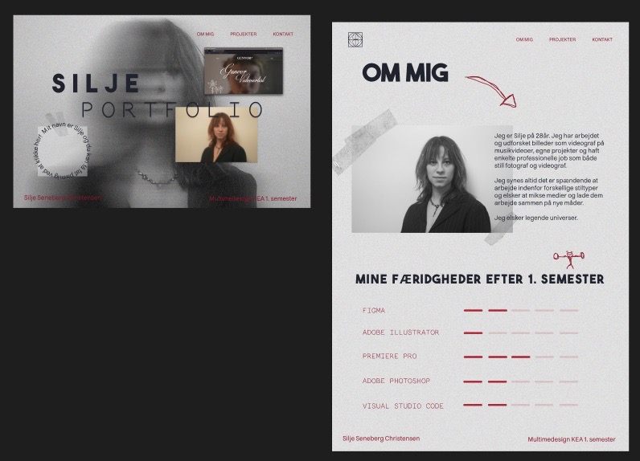
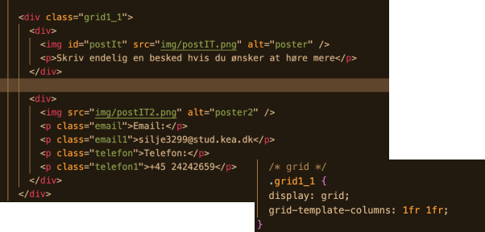

Tema 2
Tema 3
Tema 4
Tema 5
Tema 6
Tema 2
Tema 3
Tema 4
Tema 5
Tema 6
Tema 6
Portfolio eksamen
For at kunne lave mit design til mit portfolio, startede jeg med at samle inspiration på pinterest for at kunne udarbejde et moodboard.
Efter at have have samlet et moodboard, startede jeg på min prototype.
Første moodboard

Da jeg havde svært at finde en retning for mit design, samlede jeg mine tidligere projekter og lavede en 5-secound test.
Derefter udvalgte jeg forskellige elementer fra mine tidligere designs som skulle indgå i mit portfolio design, for at give det et mere personligt udtryk og give designet en rød tråd. Så med svarene fra min test og de udvalgte elementer udformede jeg et nyt moodboard.
.jpeg)
Første prototype
Det endelige moodboard

Fra prototype til kodet site
Efter at have lavet en prototype for alle sider, jeg ønskede på sitet, gik jeg i gang med at få det kodet. Her var det noget med at bruge de redskaber jeg har lært på 1. semester. Jeg startede med at indsætte alle mine elementer i html og derefter inkorporere mit design ved hjælp af et sammenspil mellem html og CSS.
Prototype: “Forside” og “Om Mig” side
Nogle af de regler jeg har stor nytte af i denneopgave har været hvordan man bl.a.:
kan klikke på det der ligger under et andet element vha. pointer-events: none;
kan placere elementer ved siden af hinanden vha. grid.
rotere elementer så det står skævt vha. rotate: Xdeg;.
åbner link i en ny fane i browseren vha. target=”_blank”.
.grid1_1 placere elementer i to lige store kolonner ved siden af hinanden
html
CSS
Åbner link i ny fane